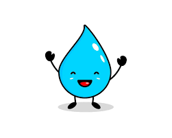

¡Esta página te dará los beneficios de tomar agua durante el día!
Al ser el principal componente del cuerpo humano, el consumo de agua brinda grandes beneficios, como permitir la absorción de nutrientes esenciales, lubricar las articulaciones, eliminar toxinas, facilitar el riego sanguíneo, y mejorar la función digestiva. Así que aquí te motramos los beneficios de beber tan vital líquido para nosotros:
